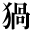
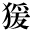
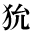
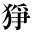
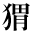
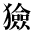
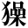
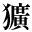
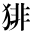

●中島敦『悟浄歎異』
●島崎藤村『夜明け前 第一部上』
●島崎藤村『夜明け前 第二部上』
|
|
1_87_75.gif |
●中島敦『悟浄歎異』 |
|  | 1_87_77.gif |
●森鴎外『魚玄機』 |
|  | 1_87_78.gif |
●幸田露伴『平将門』 |
|
|
1_87_80.gif |
●田中英光『オリンポスの果実』 ●中島敦『悟浄歎異』 |
| 1_87_81.gif |
●泉鏡花『玉川の草』 ●島崎藤村『夜明け前 第一部上』 ●島崎藤村『夜明け前 第二部上』 |
|
|
|
1_87_82.gif |
●幸田露伴『花のいろいろ』 |
|  | 2_80_30.gif |
●桑原隲蔵『支那人の文弱と保守』 ●桑原隲蔵『秦始皇帝』 |
| 2_80_36.gif |
●芥川龍之介『偸盗』 |
|
|  | 2_80_40.gif |
●芥川龍之介『仙人』（大正4年） |
|  | 2_80_43.gif |
●内田魯庵『灰燼十万巻（丸善炎上の記）』 |
|
|
2_80_47.gif |
●夏目漱石『趣味の遺伝』 |
|  | 2_80_49.gif |
●桑原隲蔵『支那人の文弱と保守』 ●桑原隲蔵『秦始皇帝』 |
|  | 2_80_51.gif |
●南方熊楠『十二支考（１）虎に関する史話と伝説民俗』 |
|
|
2_80_53.gif |
●桑原隲蔵『支那人の文弱と保守』 ●桑原隲蔵『秦始皇帝』 |
|  | 2_80_55.gif |
●夏目漱石『カーライル博物館』 |
| 2_80_56.gif |
●桑原隲蔵『秦始皇帝』 |
|  | 0212_4304.gif |
●有島武郎『星座』 |
|
|
0212_4309.gif |
●小栗虫太郎『人外魔境 天母峰』 |
|
|
0212_4345.gif |
●小栗虫太郎『人外魔境 天母峰』 |
|
|
gaiji001.gif |
●小栗虫太郎『人外魔境 天母峰』 |
|
|
gaiji002.gif |
●小栗虫太郎『人外魔境 天母峰』 |